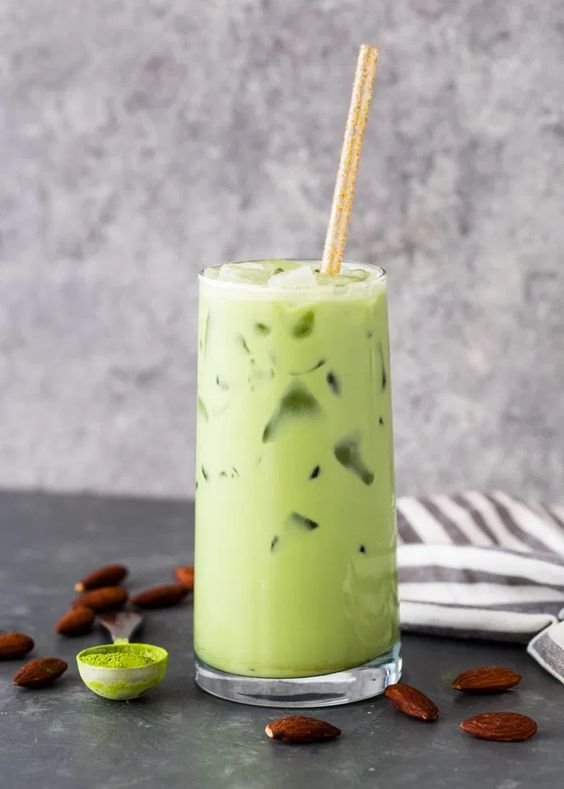

Do you want to learn more about the fascinating world of coffee shop Whatever your ambition,we will assist you in becoming a best coffeshop We have gathered brewing masters and champions from around the world to teach you the best way to brew coffee and enjoy the taste of coffee.
The vanilla latte recipe is warm and cozy, pairing espresso with milk and homemade vanilla syrup! The ideal drink for any coffee lover.
₱110/short,
₱120/tall,
₱145/grande,
₱160/venti
double coffee chocolate cake
DENSE, FUDGY COFFEE CHOCOLATE CAKE WITH RICH, DARK CHOCOLATE AND COFFEE FROSTING TOPPED WITH A MOUNTAIN OF CHOCOLATE MALT BALLS.
₱55/1slice
Iced Matcha Green Tea

In addition to Iced Matcha Green Tea, you can experiment by adding Gotcha Matcha Cafe Grade Matcha to yogurt shakes, milk
drinks and cocktails. Matcha also makes the perfect green tea latte, hot or cold.